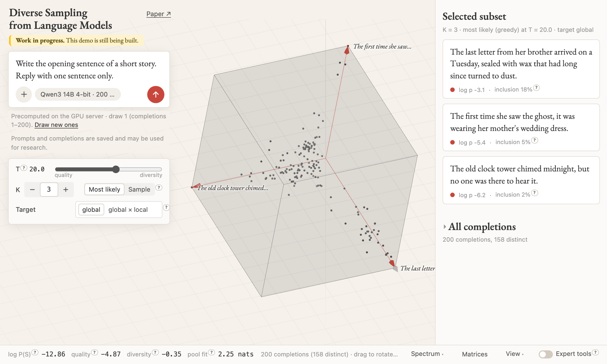

A Model of Diverse Sampling from Language Models
Independent samples from a language model often repeat one idea. We define a probability distribution over sets of answers that favors sets of good and different answers, and an algorithm, PoolDPP, that samples from it.
1ETH Zürich 2MPI-IS 3ELLIS Institute Tübingen 4Cornell University 5McGill University 6Mila 7Canada CIFAR AI Chair 8CHI-FRO
Independent samples repeat the same idea
Ask a language model to “Suggest a birthday gift for a friend.” five times, and the answers cluster around a few ideas in different words. The model draws each string on its own, so a repeat costs nothing. The figure maps a pool of 200 draws from Qwen3 14B, each placed by an embedding of its text. It marks five independent samples and the five answers that PoolDPP picks from the same pool.
Try it. Choose another prompt and draw new independent samples, then compare where the two sets sit on the map.
Diversity as volume
Think of each answer as an arrow. Its direction is its meaning, given by an embedding, and its length grows with its quality, given by the language model's probability. A DPP gives a set of answers a probability proportional to the squared area that their arrows span.
Try it. Pick two arrows and read the parallelogram they span. Then move the global temperature T, which sets how much the arrows' lengths differ.
Formally
Each answer \(y\) has a quality \(\kappa(y) \ge 0\) and a unit embedding \(\phi(y)\). Its arrow is the quality-scaled embedding \(\sqrt{\kappa(y)}\,\phi(y)\). A DPP combines the two in the kernel
\[ L(x,y) = \sqrt{\kappa(x)}\,\phi(x)^\top \phi(y)\,\sqrt{\kappa(y)}. \]
A K-DPP is a distribution over sets \(S\) of exactly \(K\) answers with \(P(S) \propto \det L_S\), where \(L_S\) is the kernel restricted to \(S\). The determinant is the squared volume spanned by the arrows of \(S\), and it factors into a quality term and a diversity term:
\[ \det L_S = \Big(\prod_{y \in S} \kappa(y)\Big)\,\det\!\big(\Phi_S^\top \Phi_S\big). \]
Here \(\Phi_S\) has the unit embeddings of \(S\) as columns. The global temperature \(T\) sets the quality as \(\kappa(y) = p(y)^{1/T}\), where \(p(y)\) is the language model's probability of the string \(y\).
Approximation scheme in PoolDPP
The K-DPP of the previous section ranges over all strings the language model is defined over, and exact inference in it is intractable. PoolDPP replaces it with a finite problem in three steps.
- Draw a pool of \(N\) strings from a proposal \(q\). We use the language model sampled token by token at a local temperature \(T'\).
- Give each string the importance weight \(w = \kappa / q\), which corrects for drawing from \(q\) instead of the target quality \(\kappa\).
- Run a K-DPP on the pool, with \(\sqrt{w/N}\,\phi\) as each draw's arrow.
The pool supports two modes. PoolDPP-Samp draws a set from the pool K-DPP. PoolDPP-MAP looks for the pool's set of largest determinant with a greedy algorithm, using \(\kappa\) in place of \(w\). The figure runs PoolDPP-Samp on the toy model of the previous section, where the exact target is known.
Try it. Draw pools of different sizes and compare each pool's distribution over pairs with the exact target. Then switch to the average over pools and read the chart of KL divergence against N.
Measured frontiers
Sweeping the global temperature T traces a curve between quality and diversity. The figure shows the paper's measured curves for PoolDPP and the baselines on open-ended generation (FineWeb), ambiguous text-to-SQL (Ambrosia), and math reasoning (GSM8K). Each point is labeled with its temperature: the local sampling temperature T' for the baselines, and the global temperature T for PoolDPP.

Try it on a live model
Type a prompt and compare independent samples with the set PoolDPP picks. The demo runs Qwen3 14B on the authors' GPU server, and the demo page states what it logs.
Cite
@inproceedings{pradacorral2026model,
title = {A Model of Diverse Sampling from Language Models},
author = {Prada-Corral, Manuel and Emara, Yahya and O'Donnell, Timothy J. and Cotterell, Ryan and Vieira, Tim},
booktitle = {Advances in Neural Information Processing Systems},
year = {2026},
url = {https://arxiv.org/abs/2611.25003}
}